Specialists without tools
Teachers and coaches are not trained in inclusive methods or individual education plans.
We train teachers, coaches and job coaches inside existing schools and centres, together with the state, from early intervention to employment.
people with disabilities in Kazakhstan in 2025
children with special educational needs at the start of the 2025–2026 school year
Will a school accept the child, will there be a tutor, can the mother keep her job? We work so that none of this depends on luck.
Sources: Bureau of National Statistics of Kazakhstan (stat.gov.kz); primeminister.kz
Teachers and coaches are not trained in inclusive methods or individual education plans.
Education, sport, healthcare and employment work separately, so support breaks at every transition.
The mother of a child with a disability almost always leaves her job.
Employers do not know how to hire and support an employee with a disability.
The most effective lever is the knowledge of people who already work with children and adults every day.
Every contribution changes many lives, through trained specialists.
Targeted programme funding
Programmes built by our own research centre
Plus psychologists, rehabilitation specialists, HR
Schools, medical and social institutions, sports and inclusive centres, employers
Children, adults and their families
The state is a partner at every stage, from early intervention to employment.
Business opens vacancies; we provide support and train job coaches.
OZIM: research and a parenting app
30+ teachers; EveryMind, UYA
Pilot of inclusive karate
300 mothers; KISHKENTAI workshop
15+ employed in 2025
At every stage, with government bodies: the Ministry of Labour and Social Protection, Astana City Akimat, local executive bodies.
No spending on buildings or equipment: funds go to programmes and people, and the results stay in the system after the project ends.
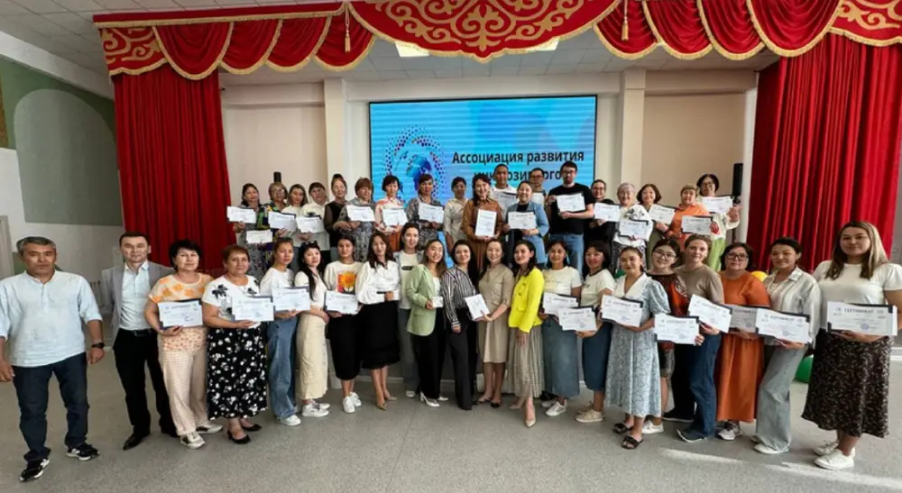
Pilot 2024–2025, supported by NU Impact Foundation
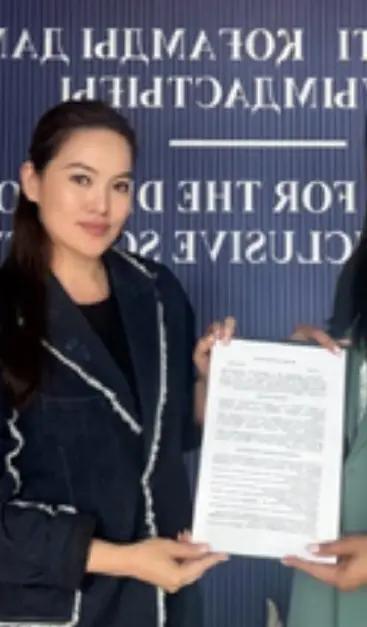
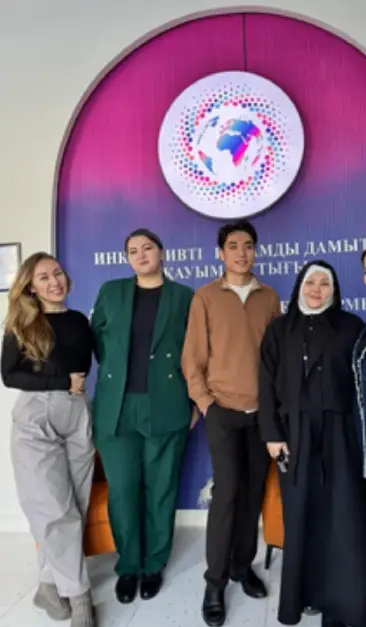
Practitioners and methodologists from a network of partner professional organisations
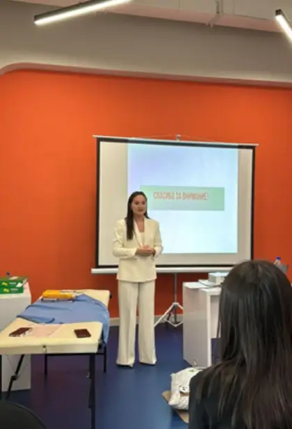
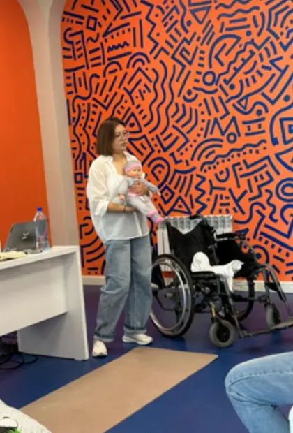
The mother of a child with a disability often has to leave work. We help her return to her profession while continuing to care for her child.
Inclusive employment is not charity. It is access to talent the market does not see.
ARIO data for 2026
Our own research centre, 3 completed studies
Programmes are built on research findings
In schools, centres and companies
Proposals for national social policy
City support and an office provided through SEC Astana
A seat in the working group on national social policy
The same approach with local executive bodies in 6 regions
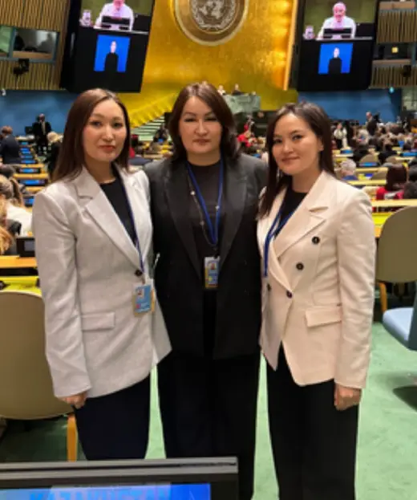
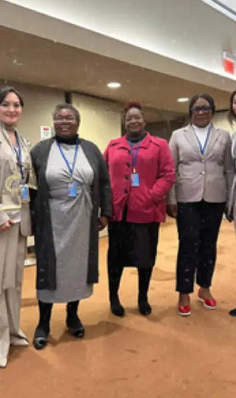
ARIO took part in the 68th session of the UN Commission on the Status of Women (CSW68) in New York, dedicated to gender equality and the empowerment of women.
The Association’s main contribution is to the social pillar. We state an environmental contribution only where it actually exists.
SDG and GRI mapping is for information only. The partner decides whether to include the data in its reporting.
We measure: reach, specialists’ practice, progress on individual goals and employment, in regular reports to partners.
Refine the model, document the practice, build the evidence base.
Partnerships with local akimats and training of local specialist teams.
Regional partnerships and adaptation to new languages and contexts.
We replicate knowledge and methods, not buildings, so entering a new region costs little.
Each project runs independently. ARIO brings them together and builds the missing links.
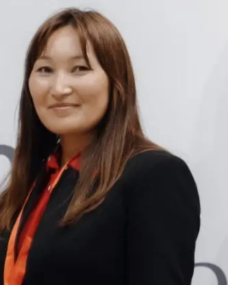
Research on early intervention and inclusive education. A mobile app for parents.
Matching tutors, companions and social assistants with children and adults.
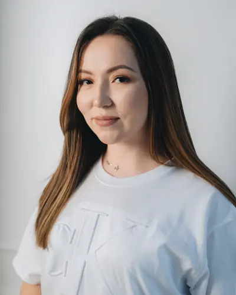
English and French for children and adults, including children with SEN. Teacher training.
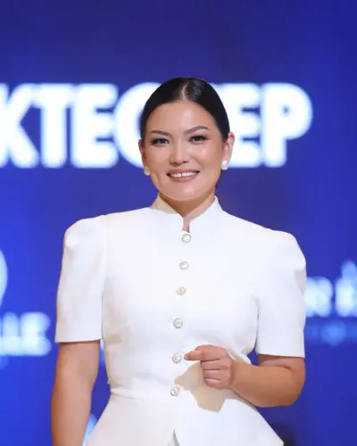
A workshop where young people with disabilities make eco-friendly toys for speech development.
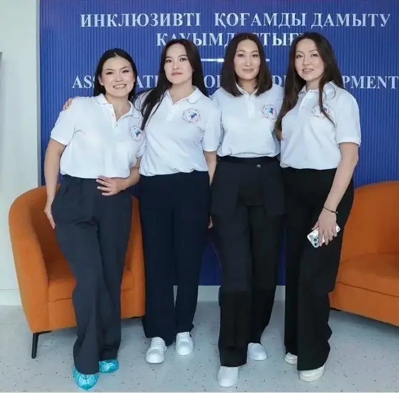
Inclusion is not charity. It is an accessible environment and equal rights.
Yes. You can sponsor a single project or programme, or fund a whole area for a year as a strategic partner.
Into programmes and people. We work inside existing schools, medical-social institutions, centres and companies, so nothing is spent on buildings or equipment. We confirm the targeted use of funds in our report to you.
Reach, specialists’ practice, progress on individual goals and employment, mapped to SDGs 4, 8 and 10 and GRI disclosures 404, 405 and 413. Whether to include the data in your report is up to you and your auditors.
Through corporate volunteering, training in inclusive culture and etiquette, and accessibility audits of your office and digital services.
Write to us. A job coach supports the candidate, prepares the workplace with you, advises HR and the team, and supports the employee after they start.